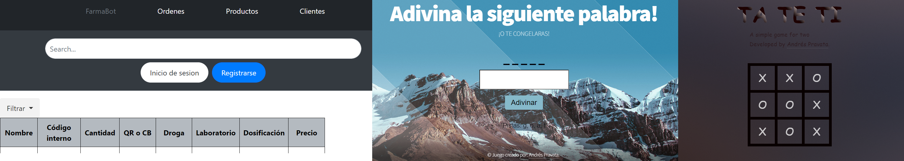

About me and what I do
Sobre Mi
A global pandemic that changed our lives, and I was no exception, I ventured self-taught into the IT world, I changed Industrial Engineering for Systems Engineering. And so my journey began in this beautiful world which gives me a lot of enthusiasm and pushes me to learn a little more every day. Now I am currently doing projects in which I have used technologies such as HMTL, CSS and JavaScript, I also use libraries such as Bootstrap. I learned to use Angular together with Typescript. I also know the use of NodeJS,MySQL. I learned Algorithms and Data Structures with Python at the University. And Java and Spring Boot framework for the BackEnd in Argentina Program. As well I also learned about Soft skills and how to apply them in my projects.
If you are wondering why two games, although they are simple, it shows that I enjoy programming, I have fun doing it. That is why there are many projects on the way that I am developing, in addition to everything that I am going to continue practicing and learning because I want to grow and give my best in this industry.
So when I get my first IT job, if there is any technology that I don't know how to use, I will learn with predisposition, proactivity and the best attitude to specialize in it.
You can go through my GitHub to see what I work on, practice and learn. Thanks for your time and attention.